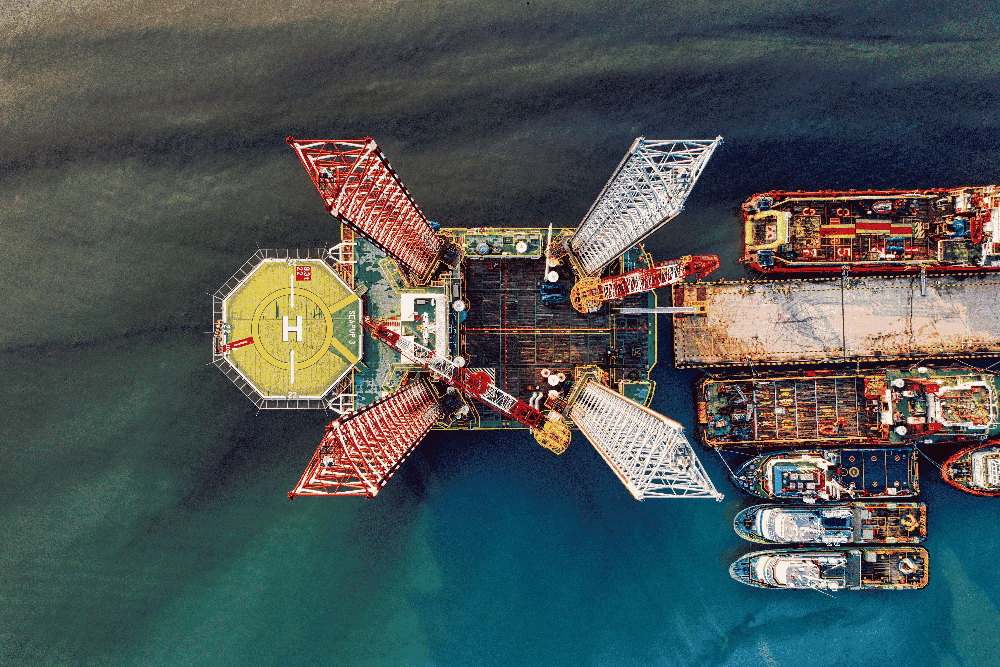

Mkpokunam Limited connects indigenous Nigerian resources, technical capabilities, and commercial opportunities with local and international partners across energy, infrastructure, technology, trade, and project development.
An Indigenous Nigerian Company Built for Industrial, Technical and Commercial Opportunities.
MKPOKUNAM LIMITED is a Nigerian owned company operating across technology, engineering, infrastructure, energy, procurement and international trade. We develop and coordinate solutions that connect local capabilities and resources with commercial opportunities across Nigeria and international markets.
Our activities span digital and software solutions, engineering and infrastructure services, energy and renewable systems, project consultancy, procurement, agricultural activities, facility management, research and development, and import and export.
With a strategic presence in Akwa Ibom, one of Nigeria’s major energy-producing regions. we are positioned to participate in the development of energy, industrial and supply chain opportunities while building partnerships with local and international enterprises.

Connecting local resources and capabilities with commercial opportunities across energy, agriculture, industry, and technology.
Supporting projects and commercial activities across energy, infrastructure, technology, trade, agriculture, and engineering.
Building partnerships that connect Nigerian resources, products, and capabilities with local, regional, and international markets.
Task: Fertile land and strong agricultural potential create opportunities for food production, procurement and investment.
Task: Strategic access to international aviation, road networks and developing maritime infrastructure supports efficient movement of goods.
Developing opportunities across Nigeria’s energy and industrial value chains, with a focus on resource access, supply partnerships, processing, and sustainable industrial growth.
Supporting the development of resilient infrastructure through engineering, project coordination, construction, and strategic partnerships across emerging industrial environments.
Building digital solutions that enable smarter operations, data-driven decision-making, automation, and technology-led transformation across industries.
Providing strategic guidance, project planning, technical coordination, and implementation support to help turn complex ideas into practical outcomes.